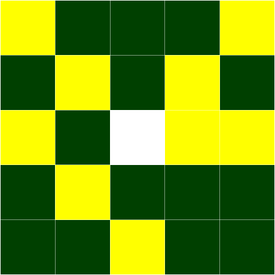

CSS Grid Layout firefox.
We can easily redefine the grid and the position of the elements on it using Media Queries. I define the Grid Areas as before outside of the Media Queries and then redefine the Grid Tracks and the position of the elements onto that grid inside my Media Queries.
Read the specification | View example as full page
See the Pen Grid by Example 13: Redefining grid areas with media queries by rachelandrew (@rachelandrew) on CodePen.